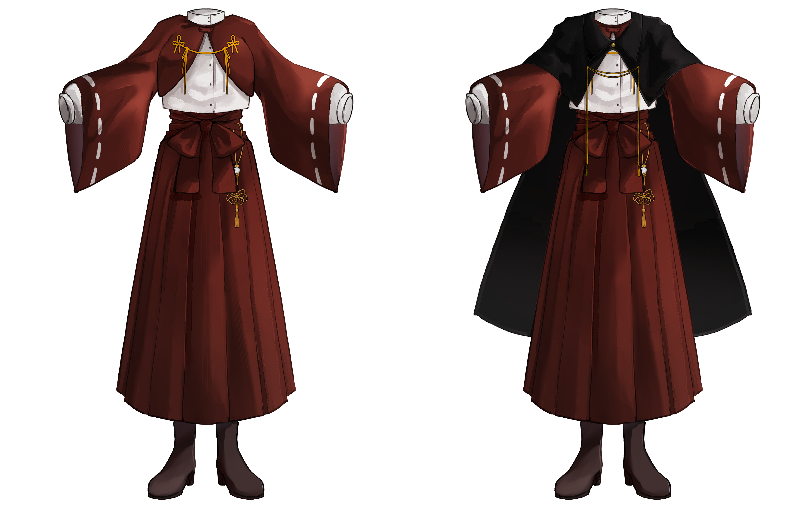
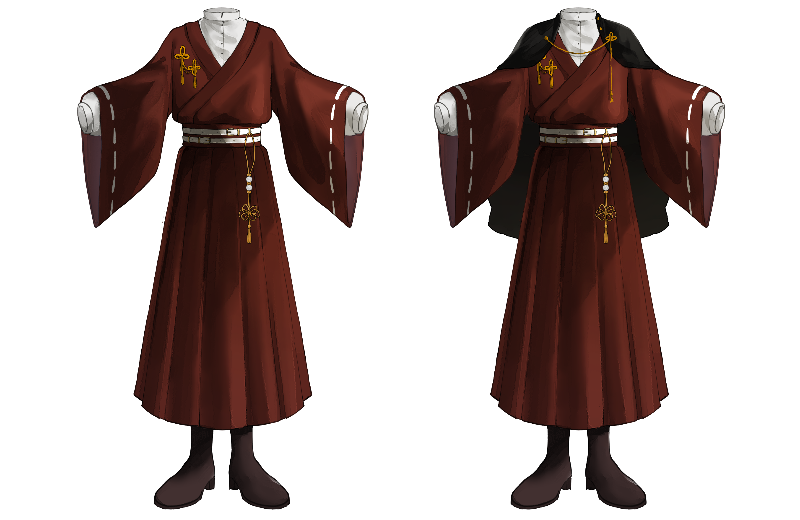

豊原高等学校
โรงเรียนมัธยมปลายโทโยฮาระ
ก่อตั้งในปี ค.ศ. 1926
จังหวัดชิมาเนะมีศาลเจ้าจำนวนมาก หลายแห่งมีประวัติความเป็นมายาวนานและกระจายอยู่ตามพื้นที่และเมืองต่าง ๆ แต่เมื่อกาลเวลาเปลี่ยนไป รวมถึงขนาดของศาลเจ้าแต่ละแห่งที่แตกต่างกัน จึงทำให้จำนวนผู้ดูแลศาลเจ้าไม่มากพอที่จะดูแลได้อย่างทั่วถึง แต่นั่นไม่ถือเป็นอุปสรรคใดเพราะเดิมทีคนดูแลศาลเจ้าก็มักจะมีเพียงแค่ 2–3 คนเท่านั้น
ในช่วงเวลานั้นมีเด็กกำพร้ามากมายตามท้องถนน จากหลากหลายสาเหตุ ไม่ว่าจะเป็นครอบครัวเสียชีวิตจนต้องไปอยู่ที่บ้านสงเคราะห์ หรือเด็กที่ถูกทอดทิ้งเพราะผู้เป็นพ่อแม่ไม่พร้อม พวกเขาเหล่านั้นไม่ได้รับการอบรมสั่งสอนหรือการดูแลเหมือนเด็กคนอื่น
ศาลเจ้าแห่งหนึ่งจึงมีแนวคิดอยากให้เด็กเหล่านั้นสามารถเข้าถึงการศึกษา และได้รับการดูแลอย่างเหมาะสม จึงได้จัดตั้งโรงเรียนในอุปถัมภ์ขึ้นมาให้สำหรับเด็กกำพร้าโดยเฉพาะ
โรงเรียนแห่งนี้ค่อนข้างเรียบง่าย ไม่ได้หรูหราอะไรนัก อีกทั้งยังมีจำนวนนักเรียนอยู่ในระดับน้อยถึงปานกลาง หลักสูตรการเรียนการสอนไม่ได้แตกต่างจากหลักสูตรสายสามัญทั่วไปของญี่ปุ่น เพียงแค่จะมีวิชาเสริมที่เกี่ยวข้องกับศาลเจ้าเพื่อปูพื้นฐานของศาสนาชินโต มารยาทและพิธีการ เพื่อให้ผู้ที่เข้ามาเรียนสามารถแยกย้ายไปประจำตามศาลเจ้าต่าง ๆ ได้ หากยังไม่มีที่ไปหลังจากเรียนจบ
เดิมทีโรงเรียนแห่งนี้รับแต่เด็กกำพร้าเข้ามาร่ำเรียน แต่ในช่วงหลังที่เข้ายุคสมัยใหม่ก็มีบุตรหลานของหลาย ๆ คนที่เกี่ยวข้องกับศาลเจ้าส่งเข้ามาเรียนปูพื้นฐานบ้าง เช่น ศิษย์เก่า ตระกูลที่เกี่ยวข้องกับศาลเจ้าโดยตรง หรือบางคนที่มองว่าที่นี่เรียนจบได้ไม่ยากนัก
โรงเรียนแห่งนี้เปิดดำเนินการมาร่วม 100 ปี แล้ว (ก่อตั้งในช่วง ค.ศ. 1926) และถือเป็นหนึ่งในประวัติศาสตร์ของจังหวัดชิมาเนะ ถูกตั้งชื่อตามนามสกุลของผู้ก่อตั้งจนกลายเป็น โรงเรียนโทโยฮาระ ก่อนที่จะเปลี่ยนชื่อเป็น โรงเรียนมัธยมปลายโทโยฮาระ ในภายหลัง เนื่องจากมีการสร้างโรงเรียนแยกสำหรับเด็กตั้งแต่ระดับอนุบาลจนถึงมัธยมต้นขึ้นอีกแห่ง
ตามหลักสูตรทุกคนเป็นนักเรียนธรรมดาทั้งหมด แต่จะมีหลักสูตรเพิ่มเติมที่แยกย้ายกันไปตามเพศสภาพ
巫女
มิโกะ
ขนบธรรมเนียมของมิโกะ
神職
ชินโชกุ
ขนบธรรมเนียมของชินโชกุ
โรงเรียนโทโยฮาระ เป็นโรงเรียนกึ่งประจำ เนื่องจากมีเด็กกำพร้าเข้ามาศึกษาเล่าเรียนที่โรงเรียนแห่งนี้เป็นจำนวนมาก ผู้อำนวยการคนแรกจึงได้สร้างบ้านไม้หลังเล็ก ๆ ที่เพียงพอสำหรับเด็กในตอนนั้นเข้ามาพักอาศัย แต่เมื่อกาลเวลาเริ่มผ่านไปเด็กที่เล่าเรียนก็เริ่มมากขึ้นเรื่อย ๆ ทำให้หอพักขยายขึ้นไปตามจำนวนนักเรียนจนในปัจจุบันสามารถรองรับนักเรียนได้ราว ๆ 300 คน
อย่างไรก็ตาม ในปัจจุบันทางโรงเรียนไม่ได้บังคับให้นักเรียนทุกคนต้องพักอาศัยอยู่ที่หอพัก หากใครประสงค์จะไปกลับ ก็สามารถไปกลับบ้านของตัวเองได้โดยไม่ต้องอยู่ประจำ
สำหรับนักเรียนที่อยู่ประจำหอพัก ทุกเช้าจะต้องตื่นมาทำความสะอาดบริเวณรอบ ๆ หอพักให้เรียบร้อยอยู่เสมอ ไม่รู้ว่าเพราะอะไร แต่ทุกเช้ามักจะมีขยะถูกวางทิ้งไว้เสมอ อาจจะมีคนเมามายุ่มย่ามหลงเข้ามาแถวนี้ก็ได้?

ผู้หญิง [ คลิกเพื่อดูรูปเต็ม ]

ผู้ชาย [ คลิกเพื่อดูรูปเต็ม ]